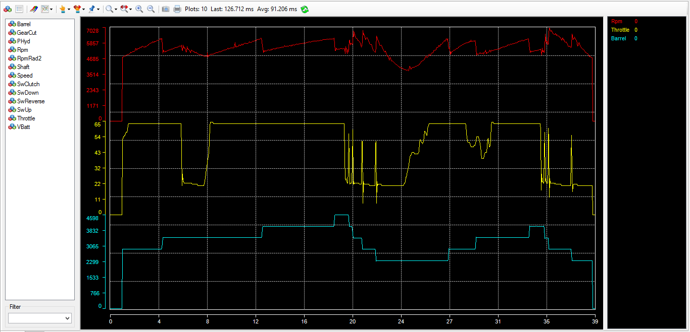

The graphical data analysis window shows recorded data in a graphical form.
In addition of simply showing graphical data trace, the analysis window offers extensive tools such as zoom, cursors and statistics computation.
On the top of that, the graphical configuration of the analysis window is fully configurable run time. Through its intuitive configuration forms, it is possible for instance, to change the window back color or change the color of a data trace or even change its tracing mode just by simple clicks and without having to reload the data or reset the form.

The analysis window has four main areas:
Created with the Personal Edition of HelpNDoc: iPhone web sites made easy